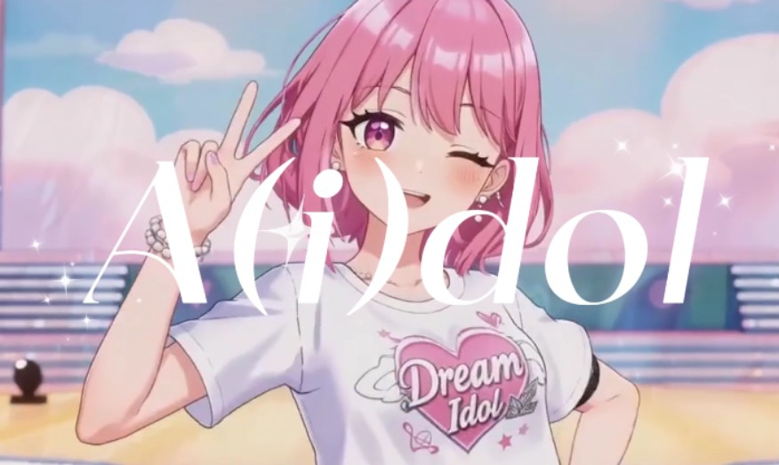
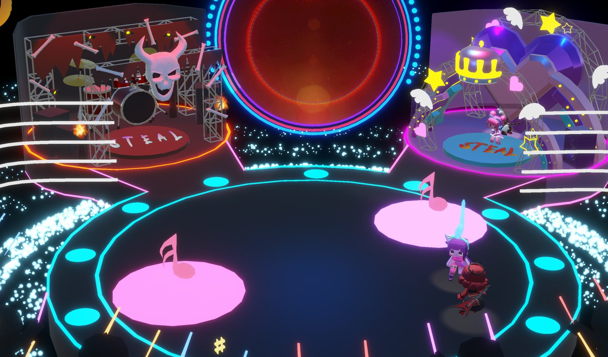
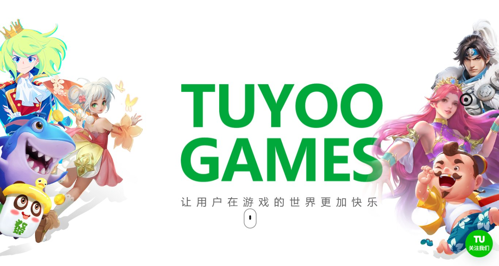
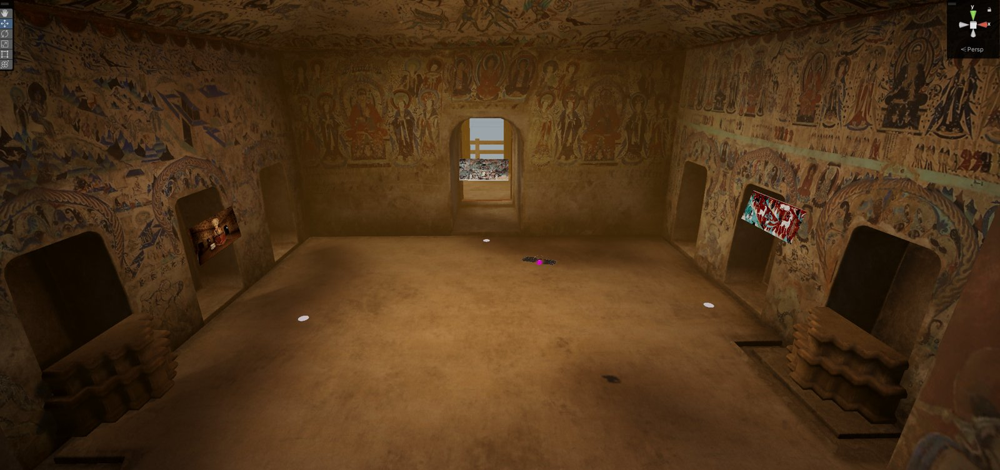
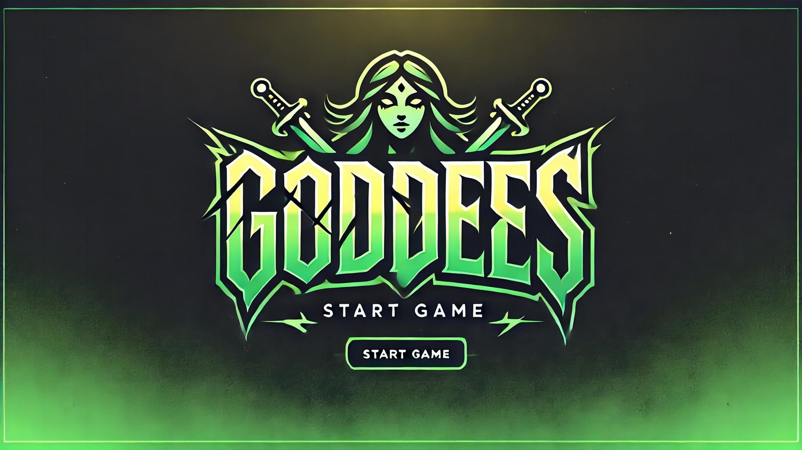

项目
按时间倒序 · 点击查看详情
Grey Waves《灰色的海浪》
一位中学老师被困在地震当天校园的时间循环里。玩家在 96 秒循环中寻找救出所有人的最佳方案，在无时限的废墟里探索线索。我负责玩法系统的实现：独立完成整套 96 秒限时循环系统，与导演共同设计 NPC 救援玩法，用线索驱动 Level Sequence 演出与场景变化。

A(i)dol
竖屏单机偶像养成手游，玩家的选择会影响 AI 生成的形象、声音与视频。负责 Unity 前端与系统规则落地：进度与场景门控、体力与造型规则、三消原型到 World 浏览的迭代，以及 World Studio、UI 构建工具等内容生产工具。

Beat Battle Royale《节奏舞台》
2v2 节奏对战派对游戏：踩着节拍打连击抢音符，领先的一方接管舞台的大屏和音乐。共同设计机制，负责玩家 3C、节拍判定、计分与领先方舞台切换。

StarFisher
为无障碍手柄设计的海底对抗游戏：钓水母串成链带回基地，钩断别人的链。共同设计"黄金矿工 × 贪吃蛇"机制，负责玩家移动与鱼钩抓取。

《捕鱼大作战》BOSS 玩法与策划工具
线上项目实习。依据策划需求落地 3 个上线 BOSS 玩法，独立开发鱼类路径编辑器，维护 GM 工具并对接后端协议上报性能与行为数据。

VR Dunhuang
在莫高窟里抓起一件艺术品，走进它想象出的世界。负责全部手势追踪交互——抓取、点选、传送——以及场景交互逻辑的设计与实现。

Dreams Don't Die
围绕独立游戏开发者心理历程的情绪叙事游戏：4 个玩法关卡与 5 个叙事场景沿一条情绪曲线交替推进。我发起并主导的毕业设计：游戏设计、全部场景与 HDRP 渲染、玩法系统实现。

Goddess
在老师提供的 TypeScript 引擎框架上做的 2D 动作 Roguelike。引擎没有 UI 系统，我从点击检测、Canvas 到按钮 / 图片 / 文字组件从零写了一套，负责游戏设计与全部游戏内 UI。